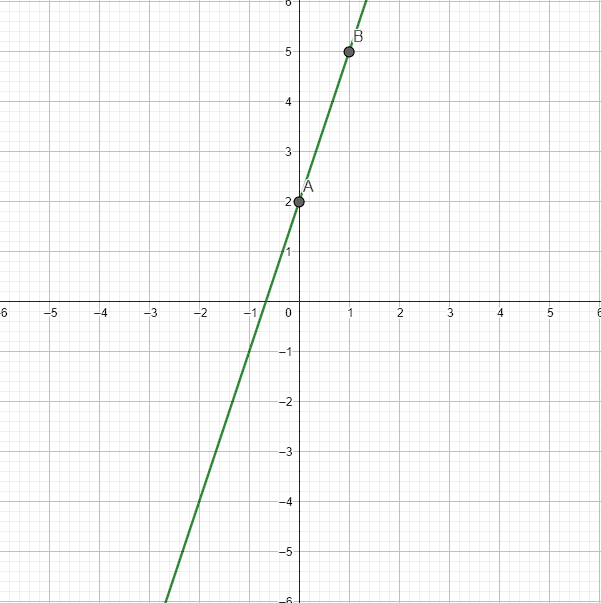
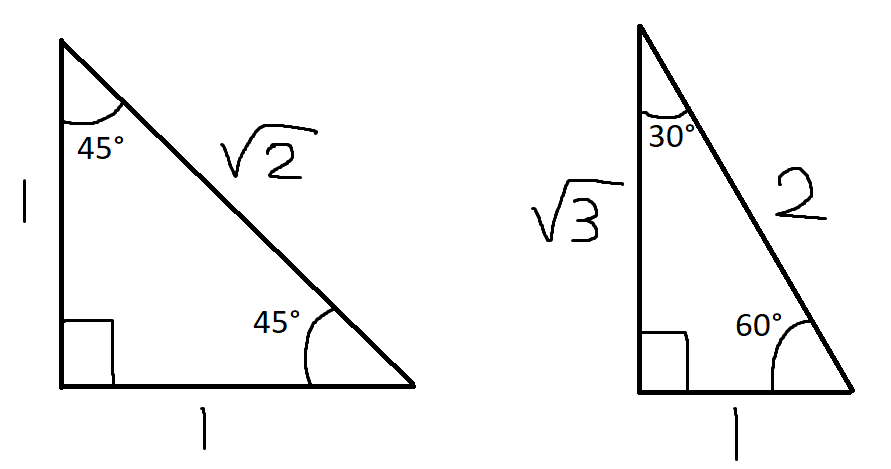
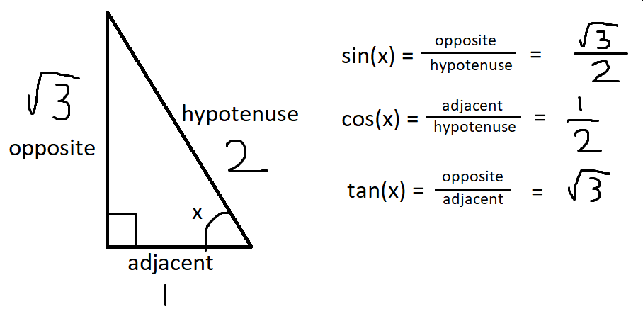
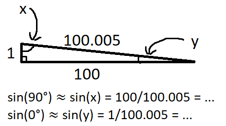
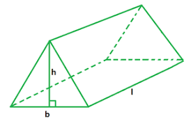
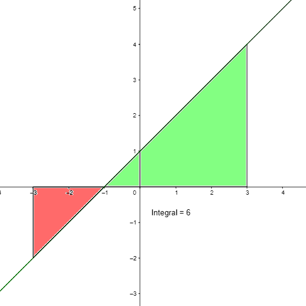

Select which sections you desire help for:
Arithmetic is the elementary field of mathematics which concerns the study and use of the traditional operations (+, -, ×, ÷) on numbers. Familiarity with arithmetic is necessary to do any form of traditional mathematics, as well as to build intuitions for more advanced fields (including those which redefine these operations).
The problems in this category are meant to be warm-ups and focus on only the first three operators with small numbers. Because of this, the advice in this section is directed towards doing these problems quickly in your head, since it is expected that you could solve these on paper.
1. What is: a + b?
The simplest method is just to add one digit at a time, from right to left. This is how addition is traditionally taught and will work every time. However, when a pair of digits adds up to 10 or more, some people find it easier to rearrange the numbers before adding.
For example, in 39 + 115, I find it easier to "move" 1 and think of it as 40 + 114, which is much simpler. I could give more examples, but the only thing that helps build intuition and speed is practice.
2. What is: a - b?
Since this is an introduction, the value b will always be equal to a or smaller than a. This means that the solution will be nonnegative (i.e., postive or zero). The strategy for this problem is merely an extension of the previous one.
For example, in 93 - 48, I find it easier to "move" 2 and think of it as 95 - 50, which is much simpler.
3. What is: a * b?
Since b is at most 10, this problem just requires you to know single digit times tables and to then do an easy addition problem. The only trick I use is for multiplying by 9.
For example, in 25 * 9, I would multiply by 10 then substract the original value, 250 - 25, which I find simpler.
Algebra introduces the concept of variables and describes how they can be manipulated within formulas. This abstraction is incredibly useful and thus it unifies practically every field of mathematics and is helpful in everyday life. This section is titled "Algebra I" after the course typically taught in American (junior) high schools which covers these concepts.
1. Solve for x: a(x + b) = c
This is the first problem to introduce an equation. Equations are distinct from expressions because they have an equality sign (=). While an expression can only be simplified or rearraged, an equation can be solved to find new information about one or more of the terms. In this case, we can determine the value of x by doing the same operations to each side of the equation.
If we know that d = 3, it is easy to see that d+1 = 3+1. Similarly, we can see that 2*d = 2*3. Now, let us consider an example equation: 3(x+7) = 12.
Since the 3 is multiplying the entire term on the left, we should divide by 3 first. This gives us x+7 = 4. Now, we simply subtract 7 from each side to get our answer, x = -3.
2. Evaluate when x=a: x(bx + c)
This problem asks us to simplify an expression by giving us information about one of the terms in the expression. In this case, we know the value of x and want to simplify the expression to a single value.
Consider x(2x + 5) when x=4. All we need to do is replace x with the value we know it is equal to, then simplify. That is, we take 4(2*4 + 5) and simplify one piece at a time. First, to 4(8 + 5), then to 4(13), and finally to 52.
3. Slope and y-intercept
One other key idea in algebra is that variables can be treated as either dependent or independent. A dependent variable usually depends on some function that involves an independent variable.
Imagine if we added a second variable to the previous problem and set it equal to the expression. This would give us y = x(2x + 5). In this case, we have not been given a value of x. Therefore, we could imagine x being equal to any arbitrary value. For example, we could calculate what the value of y would be if x=4. As shown above, this is 52.
Now let's imagine a much simpler equation: y = 3x + 2. This is plotted below in standard Cartesian coordinates. The term "y-intercept" refers to the y-value at the point where the line touches the y-axis (vertical).
It is clear from point A on the plot that this value is 2. But what do we know about x when the line "touches" the y-axis? We know that x must be 0 at that point, regardless of the intial equation. Therefore, we can set x=0 and solve for y to get the answer directly. In this example, we can see that y = 3*0 + 2, or y = 2, as expected.
For an equation representing a straight line (as in this problem), the slope measures how steep the line is. More specifically, given two points A and B, the slope is equal to how much the y-value changes divided by how much the x-value changes. As is seen in the plot, the change in y-value is equal to 5-2 and the change in x-value is equal to 1-0. Therefore, the slope is 3/1, or 3.
As you may have noticed, this value also appears in the original equation, y = 3x + 2. This is because the equation is in slope-intercept form. Since the y-intercept occurs when x=0, it is clear that the first term is also 0 and thus y=2. Similarly, since slope is only concerned with a change in value, the second term is the same whether x is 0 or 200. If we imagine moving from x to x+1, our y-value will from 3x + 2 to 3(x+1) + 2, a change of 3.
Geometry is the study of shapes and Trig (short for trigonometry) is the study of triangles and extensions of their properties. These topics are closely related and thus are often taught and tested together.
1. 30°-60°-90° Triangle
This question utilizes the properties of similar shapes. Two shapes are similar if each angle is the same in both shapes. The only difference between the two shapes is their scale. As shown below, in a triangle with angles of 30°, 60° and 90°, if the shortest side has a length of 1, the longest side will have a length of 2. In a right triangle (a triangle which contains a 90° angle), these sides are called the (short) leg and the hypotenuse respectively.
2. The Sine Function
The sine function is one of the 3 main trig functions. If you input an angle x, the value of sin(x) is the ratio of two sides of the triangle with the angle x. The ratios for the 3 main functions can be remembered easily with the acronym SOH CAH TOA. This breaks down to sine is opp/hyp, cosine is adj/hyp and tangent is opp/adj. These are illustrated below on a 30°-60°-90° triangle.
For this question, you just need to know the value of sin(x) for a couple common angles. If you remember the two triangles shown above and the definition of sin(x), you can get the answers quite quickly. For example, in the second image you can directly see that sin(60°) = (√3)/2.
Finally, for the extreme angles of 0° and 90°, there are not any real triangles that have these angles. Therefore, we should examine the limit of what happens as a triangle gets closer to this extreme.
3. Volume of a Cylinder
For a closed 2D shape, area refers to the amount of space that is enclosed by the shape on a surface. The 3D equivelent is volume, which refers to the amount space that is enclosed by the solid in all directions. The relationship between these quantities is most clearly seen with prismatic solids.
A prismatic solid is a shape where every cross section which is parallel to the bases is identical in size and shape. An example is a triangular prism, shown below. If we just look at the end closest to us, we see a triangle. The area of that triangle is b*h/2. Since every part of the prism is a triangle with the same size and shape, the total volume it encloses is simply the area of that base triangle times the length of the prism. That is, V = l*b*h/2.
If we change the triangle base to a circle and extend this change all the way through, we end up with a cylinder. Using the same logic as before, we can determine that the volume of the cylinder is just the area of the circular base times the height h. That is, V = π*r²*h.
Note: The term prismatic solid is used rather than prism because a prism must have a polygon for a base. A polygon is type of 2D shape that is only composed of line segments; no curves or circles are allowed.
Calculus is the first useful math the field of mathematics concerned with continuous change.
The two main branches are differential and integral.
Differential calculus returns to the concept of slope from Algebra I and examines it in the context of non-linear functions.
Integral calculus examines accumulation and the area underneath various functions.
1. Area Under a Curve
There are two main methods to calculating the area under a curve-- via geometry or via the Fundamental Theorem of Calculus. Consider the function y = x + 1, and the area between x=-3 and x=3. This area is shown below.
First, it is important to note that the area is signed, meaning if the function is positive, the area is positive and vice versa. These sections are colored green/red respectively. By looking at the plot we can see the green triangle has a length of 4 and a height of 4, so its area is 8. Similarly, we can see the red triangle has a length of 2 and a height of 2, so its area is 2. Adding these together and remembering the signs gives a net area of 8-2, or 6, which is the value shown on the plot as the integral (net area).
A more direct method is with the Fundamental Theorem of Calculus. Given a function f, this theorem states that the integral of f from a to b is equal to F(b) - F(a), where F is an antiderivative of f. F being an antiderivative simply means that if you take the derivative of F you get the original function f again. This will make more sense in later sections where derivatives are better explained.
All that you need to know for this problem is the power rule for taking antiderivatives. First, you can do each term separately. Second, if f = c*xd, then F = c/(d+1)*xd+1. Therefore, in our example with f = x+1, we get F = x2/2 + x. Finally, F(3) - F(-3) = 9/2 + 3 - (9/2 - 3) = 6.
2. Common Non-Polynomial Derivatives
This question requires you to know the derivatives of several common functions. The derivative of a function describes the instantaneous slope of the function at every point. One easy example is the constant function, f = 3, a horizontal line. Using our knowledge from Algebra I, it is clear that the slope is 0. Therefore, the derivative is 0. Similarly, the derivative of f = 7x is 7.
It gets a bit more complicated with curved functions. The exponential function is such that it grows at a rate proportional to its value. When the base is e, it is equal to its value. That is, the derivative of ex is ex.
The trig functions follow a cycle. The derivative of sin(x) is cos(x); then, the derivative of cos(x) is -sin(x). Therefore, if you take the derivative of either one four times in a row, you will return to the original function.
The hyperbolic trig functions follow a slightly different cycle.
First, define sinh(x) = (ex - e-x)/2 and define cosh(x) = (ex + e-x)/2. This gives us:
The derivative of sinh(x) = (ex + e-x)/2 = cosh(x).
The derivative of cosh(x) = (ex - e-x)/2 = sinh(x).
Finally, we have the natural logarithm, ln(x). I recommend memorizing it, but you can derive it based off of only log rules and the derivatives already explained.
Note that y' means the derivative of y. The steps are as follows:
y = ln(x)
ey = x
y'ey = 1
y' = e-y = e-ln(x) = eln(x-1) = x-1 = 1/x.
3. Derivative at a Point
This question asks you to take the derivative of a polynomial function and evaluate it at a given point. The rule for polynomials is quite simple: the derivative of c*xd is d*c*xd-1, then you just add the terms together.
For example, given the function y = 2x4 - 5x2 + 7, the derivative is y' = 8x3 - 10x. If we were asked for the derivative at x=2, the answer would be y'(2) = 64 - 20 = 44.